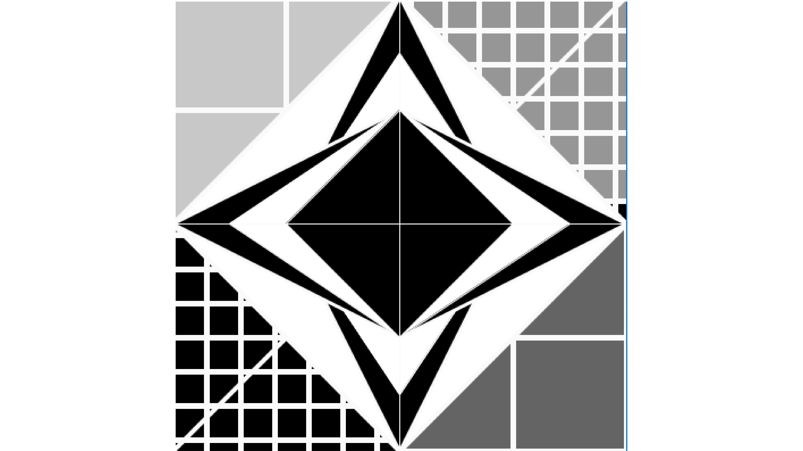

Work6
「簡単な形の組み合わせ
による、複雑な造形」

制作授業：メディアプログラミング演習Ⅰ
使用環境：Processing
制作時期：2022後期
プログラミングソフトのProcessingを使用して
制作したロゴデザインです。
簡単な形の組み合わせによる複雑な造形というテーマのもと
「必ずwhileもしくはfor文,if文も必ず使う。
点、線、円、三角形、四角形などの基礎的な形を使う。
静止画を作成する。」という条件下が作成しました。
線、三角形、四角形のみを使用していて、
シンメトリー的なデザインとなっています。
また、真ん中の図形に線を入れて立体感を出しています。
//制作コード
size(400, 400);
background(0);
int eSize = 40;
strokeWeight(5); //左上四角形
noFill();
stroke( 150 );
rect(0, 0, 200,200);
strokeWeight(5); //右下四角形
noFill();
stroke( 250 );
rect(200, 200, 200,200);
for (int y = 0; y <= height; y +=30) { //小さい四角
for (int x = 0; x <= width; x += 30) {
if (x < width/2 && y < height/2) { //右上
fill(150);
} else if (x >= width/2 && y >= 180) { //左下
fill(0);
}
rect(x, y, eSize, eSize);
}
}
for(int y = 0; y <= 150; y += 100){//背景大きい四角形
for(int x = 0; x <= 150; x += 100){
if(x >100 && y>100 || x<150 && y<150){
fill(200);
}else{
fill(100);
}
rect(x, y, 100, 100);
}
}
for(int y = 200; y <= 350; y += 100){//背景四角形
for(int x = 200; x <= 350; x += 100){
fill(100);
rect(x, y, 100, 100);
}
}
stroke(250);//斜め線
strokeWeight(4);
line(400, 0, 0, 400);
beginShape();//ひし形
fill(255);
vertex(200, 0);
vertex(400, 200);
vertex(200, 400);
vertex(0, 200);
strokeWeight(4);
endShape(CLOSE);
beginShape();//縦長ひし形2
fill(0);
vertex(200, 0);
vertex(300, 200);
vertex(200, 400);
vertex(100, 200);
strokeWeight(3);
endShape(CLOSE);
beginShape();//縦長ひし形1
fill(255);
vertex(200, 50);
vertex(300, 200);
vertex(200, 350);
vertex(100, 200);
strokeWeight(1);
endShape(CLOSE);
beginShape();//横長ひし形2
fill(0);
vertex(200, 100);
vertex(400, 200);
vertex(200, 300);
vertex(0, 200);
strokeWeight(3);
endShape(CLOSE);
beginShape();//横長ひし形1
fill(255);
vertex(200, 100);
vertex(350, 200);
vertex(200, 300);
vertex(50, 200);
strokeWeight(1);
endShape(CLOSE);
beginShape();
fill(255);
vertex(200, 350);
vertex(250, 275);
vertex(200, 300);
vertex(150, 275);
strokeWeight(1);
endShape(CLOSE);
beginShape();//中心ひし形
fill(0);
vertex(200, 100);
vertex(300, 200);
vertex(200, 300);
vertex(100, 200);
strokeWeight(1);
endShape(CLOSE);
fill(255);//中央縦線
line(200, 0, 200, height);
fill(255);//中央横線
line(0, 200, width, 200);
上記のコードをProcessing等で読み込むと、
Googleのロゴが表示されます。